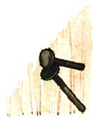
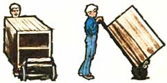
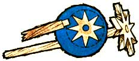
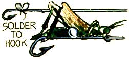
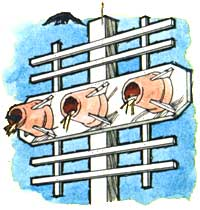
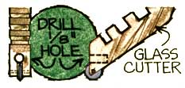
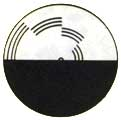
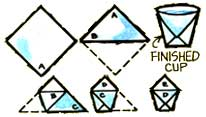
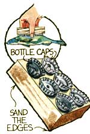

The situation is a common one around the house or barn ... there's something heavy to hang and a single nail just won't handle the job with any reliability.
Two nails, however, placed as illustrated in the accompanying sketch, will support each other and hold up a goodly amount of weight. Just drive the lower nail first.
Moving heavy objects without the aid of a handtruck (or dolly) is hazardous to floors, walls, and fingers . . . aside from often exposing anyone around to the cussin' equivalent of a blue norther. In the absence of the right equipment, though, any old-fashioned push-type lawn mower- flipped upside down so the blades don't engage the ground and with the load supported by the wooden roller-can handle most jobs nicely. Furthermore, a cross brace bolted on halfway up the handle makes an easily removable support and a handy place to attach a security strap.
. . . but you can fashion one of these German cooking utensils from hardwood. In case you're wondering, the querl is used for everything from mashing potatoes to squeezing lemons (with beating eggs somewhere in between) . . . and it performs most of these duties more efficiently than any tool available at your local hardware emporium.
Cut a circular piece (about two inches in diameter) from 1/2-inch-thick stock (preferably maple or ash). A series of straight cuts-use a vice to hold the wood-provides the traditional star shape . . . and a 3/8-inch hole accepts the foot-long handle. In use the star goes into the mixin's s and the handle is twirled rapidly between the palms of the hands.
Those little green-brown grasshoppers that sort of explode in front of you when you walk through a field make about the finest-and least expensive-trout baits around. Unfortunately, once on the hook they either die or-at best-ever look quite natural. And presenting an unnatural-looking offering to a smart trout has about the same effect as falling into his stream . . . he'll move on in a hurry.
Well, here's a way to solve that dilemma: Solder a small strip of light sheet metal (tinned steel or aluminum cut from a can) to the shank of a hook. Then just bend the strap around the 'hopper's body . . . and he'll float on downstream like a full-rigged schooner. A bug affixed this way behaves enough like "ordinary" insects on the water to stand a very good chance of tempting up a Friday night supper.
A plain old clay flowerpot can be made into an attractive-and functional-birdhouse for cliff swallows or most any other species of bird. Open up the bottom hole in the container by carefully breaking away bits of material with pliers and finish the job with a file. The pot is then placed-top down-on a board that is at least three inches wider than the receptacle used and the prefabricated birdhouse is fastened to the board with screws and wooden cleats as shown in the drawing. A trellis arrangement above and below the assembly will provide roosting room for the feathered tenants . . . and the whole works should be secured to a suitable pole, tree, or wall about ten feet from the ground. Then just sit back and wait for your new neighbors to fly in!
In a pinch you can make a ruling pen that lays a nice fine line-and doesn't muck up your ruler-from a discarded glass cutter.
Simply drill a 1/8-inch hole in the handle just above the cutting wheel (this both enlarges the space that surrounds the wheel, and gives it a keyhole shape). Then pack the opening with felt scrap . . . and soak the cloth with whatever ink you plan to use. This handmade writing utensil will lay down quite a line on each filling of its tiny reservoir.
If inclement weather is typical of autumn in your area, this simple optical illusion should help keep the youngsters occupied when cabin fever sets in.
Cut out the printed disk-or reproduce it yourself if you want to keep your copy of MOTHER intact-and paste it on stiff cardboard. Push a pin through the wheel from the bottom until the pinhead touches the cardboard . . . then cut off the dangerous point and give the whirligig a spin. Surprise! Some of the black lines magically seem to turn into various colors-different viewers will see different parts of the spectrum-and a reverse twist will produce an entirely separate array of hues!
Anyone who spends a lot of time out-of-doors knows that the uses for a water receptacle can be as many and varied as the lack of such a container can be infuriating.
It's good, then, to know that a quick and temporarily serviceable paper cup can be whipped up from an ordinary eight- to nine-inch square of paper in just a few seconds by anyone "in the know". Just [a] fold corner A over to the opposing corner as shown in the diagram . . . then [b] bend corner B to the position shown in Step three. Finally, [c] fold corner C to the position shown in Step four, [d] turn down points D and E on opposite sides, and [e] spread the upper edges and your cup is completed.
"Fishin' ", to paraphrase Robert Ruark, "keeps a person out of trouble." That is: A few hours by the waterside provide a great opportunity to kind of let the wind blow between your ears and separate the mental wheat from the chaff. And often-almost in spite of yourself-you'll end up adding some delicious eatin' to the family food supply in the bargain.
Trouble is, a lot of the finny creatures you're liable to catch on the typical midsummer piscatorial expedition aren't fit for fryin until their scales are removed. Sure, the edge of a knife blade will do the job . . . but if your hand isn't quite used to the work you'll probably do some slicing when you should be scaling.
A hand-sized chunk of wood (most any scrap you have around will do) and some discarded bottle caps, however, can solve this problem. Nail a few rows of the caps to one side of your block, sand its edges smooth to make it more comfortable to hold... then grip the assembly like a scrub brush, and send those scaled a-flyin'!
1 Edgar Rice Burroughs' birthday, 1875; Chop seuy first concocted, 1896
2 New Moon
4 Labor Day; Albert Schweitzer dies, 1967
7 Grandma Moses' birthday, 1908
8 Euell Gibbon's birthday, 1911
9 First Quarter Moon
11 D. H. Lawrence's birthday, 1885
14 Dante dies, 1321
16 Oklahoma Land Rush, 1893
17 First United States/Indian Treaty (Delaware Tribe), 1778
19 Mickey Mouse begins his acting career in "Steamboat Willie", 1928
21 Battle of Marathon (Greece), 490 B.C.; Chief Joseph dies in exile, 1904
22 Susan B. Anthony's birthday, 1820; American Indian Day
23 Autumnal Equinox
24 Last Quarter Moon
25 Yosemite National Park established
26 T.S. Eliot's birthday, 1888
28 Flogging of sailors stopped in U.S. Navy, 1880
30 Safety pin incented, 1894
2 Rosh Hashana; Groucho Marx's birthday, 1895; New Moon
3 Rebecca Felton becomes first US woman senator, 1922
4 Sputnik I launched 1957; Pancho Villa's Birthday 1877
6 Thor Heyerdahl's birthday, 1914
9 John Lennon's birthday, 1940; First Quarter Moon
11 Yom Kippur
12 Christopher Columbus discovered by native Americans, 1492
13 Lenny Bruce's birthday, 1925
15 First draft card burning, 1965
16 Full Moon
20 Bela Lugosi's birthday, 1882
21 Jack Kerouac dies, 1969
23 Women march in Washington D.C. demanding suffrage, 1915; Last Quarter Moon
24 First Friction match patented, 1836
26 Gunfight at OK Corral, 1891
27 Crazy Horse's band escapes to Canada, 1877
29 Daylight Savings Time ends, 2:00 a.m.; Stock Market collapses, 1929
30 Ezra Pound's birthday, 1885
31 Halloween; Nevada admitted to the Union, 1864; New Moon
|
 |
 |
 |
|
 |
 |
 |
|
 |
 |
 |